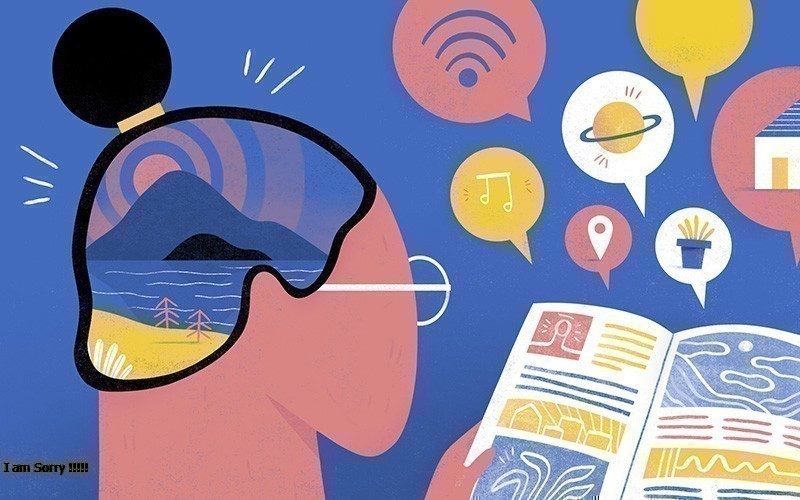
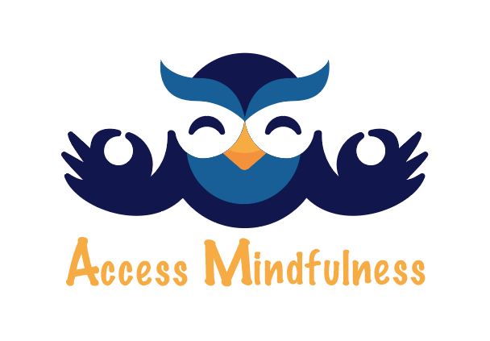

Enter your feedback
Keep learning
And have fun
Tâm lý học
Bệnh Trầm cảm sẽ giết chúng ta thế nào?
 Trầm cảm là một chứng rối loạn tâm trạng, gây ra một cảm giác buồn và mất hứng thú kéo dài dai dẳng. Chứng trầm cảm sẽ ảnh hưởng đến cách bạn cảm nhận, suy nghĩ, hành xử và có thể dẫn đến những vấn đề đa dạng về tinh thần và thể chất.
Trầm cảm là một chứng rối loạn tâm trạng, gây ra một cảm giác buồn và mất hứng thú kéo dài dai dẳng. Chứng trầm cảm sẽ ảnh hưởng đến cách bạn cảm nhận, suy nghĩ, hành xử và có thể dẫn đến những vấn đề đa dạng về tinh thần và thể chất.
Continue reading
Tại sao đám đông lại đáng sợ
Tâm lý học đám đông còn được gọi là tâm lý đám đông là một nhánh của Tâm lý học xã hội nghiên cứu về tâm lý và hành xử của một người bình thường trong những hoạt động mang tính chất tập thể. Các nhà tâm lý xã hội đã phát triển một số lý thuyết để giải thích cách mà tâm lý của đám đông khác và tương tác với tâm lý của các cá nhân bên trong nó.Continue reading
Tư duy nhanh hay chậm

Tư duy phản biện hay là tư duy phân tích là một quá trình tư duy biện chứng gồm phân tích và đánh giá một thông tin đã có theo các cách nhìn khác cho vấn đề đã đặt ra nhằm làm sáng tỏ và khẳng định lại tính chính xác của vấn đề. Lập luận phản biện phải rõ ràng, lôgíc, đầy đủ bằng chứng, tỉ mỉ và công tâm
Continue reading
Science
Tầng cuối của Maslow và trường phái nhân văn-không phải là'thể hiện' hay 'khẳng định'
Tháp nhu cầu của Maslow được nhà tâm lý học Abraham Maslow đưa ra vào năm 1943 trong bài viết A Theory of Human Motivation và là một trong những lý thuyết quan trọng nhất của quản trị kinh doanh; đặc biệt là các ứng dụng cụ thể trong quản trị nhân sự và quản trị marketing
Continue reading
Ung thư chính xác là gì
Ung thư là một bệnh của các tế bào, vốn là những đơn vị cấu trúc cơ bản của cơ thể. ... Những khối u có thể lành tính (không phải ung thư) hoặc ác tính (ung thư). Những khối u lành tính không xâm lấn vào các cơ quan và các mô xung quanh của cơ thể.
Continue reading
Làm sao để chống ngụy khoa học
Giả khoa học hay ngụy khoa học là một loại hình của các kiến thức hay các quy trình nào đó, mà nói chung không được giới khoa học công nhận là một môn khoa học do không đáp ứng được các nguyên tắc khoa học cơ bản, đồng thời nó luôn cố gắng tự chứng tỏ đó là môn khoa học. Nguyên tắc đó là khả năng kiểm chứng bằng các phương pháp khoa học.Continue reading
Life style
Làm thế nào để sống Zero-waste
Zero Wastelà một triết lý khuyến khích việc thiết kế lại vòng đời tài nguyên để tất cả các sản phẩm được tái sử dụng. Mục tiêu là không có rác được gửi đến các bãi rác, lò đốt rác hoặc đại dương. Hiện tại, chỉ có 9% nhựa thực sự được tái chế Continue reading
Mindfulness là gì ? (Chánh niệm có ý nghĩa gì trong cuộc sống)

Chánh niệm hay chính niệm: Chánh niệm là một trong tám chi phần quan trọng của Bát chánh đạo, là sự tỉnh giác, không quên niệm, biết rõ các pháp một cách trọn vẹn, biết rõ những gì phát sanh ngay trong mỗi giây phút của hiện tại, bây giờ và ở đây. Chánh niệm là sự biết rõ được những gì đang có mặt, đang xảy ra Continue reading
Làm thế nào để có mối quan hệ tốt đep?
Các mối quan hệ thường đem đến cho bạn cảm giác thỏa mãn và hạnh phúc. Tuy nhiên, bạn cũng sẽ đối mặt với thử thách và phải nỗ lực rất nhiều. Có thể bạn và bạn trai quan tâm đến nhau nhưng mối quan hệ lại không có kết quả như bạn mong muốn. Hãy học cách cải thiện tình cảm với bạn trai để bạn có thể giữ được mối quan hệ bền chặt và trọn vẹn. Continue reading